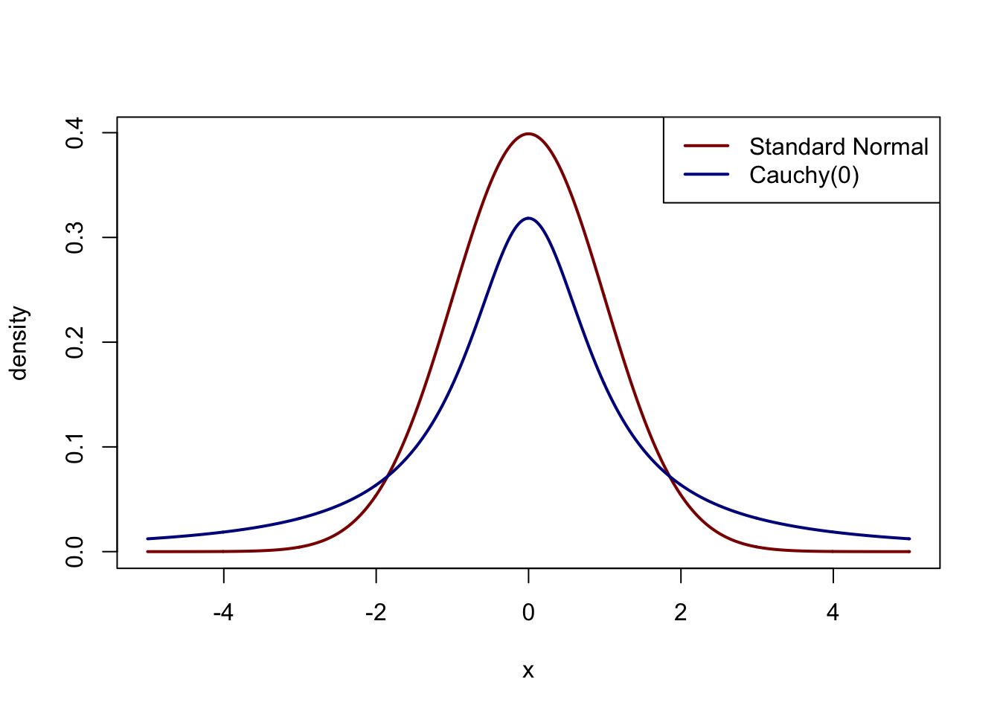

4 Chapter 3 - Common Families of Distributions
4.1 9/21/2016
A single distribution is completely specified (e.g. Gamma(3,2)).
A family of distributions is defined by a functional form and parameter space containing more than 1 element (e.g. Uniform(\(a\),\(b\)); \(\Theta = \{(a,b) : a,b, \in \mathbb{R}\})\)
4.1.1 Discrete Uniform \((N)\)
\[P(X = x) = \frac{1}{N}; x \in \{1,2,3,...\}\]
Typical example: Die
\[
\begin{aligned}
E[X] &= \sum_{i=1}^N i\frac{1}{N} \\
&= \frac{1}{N}\frac{N(N+1)}{2} \\
&=\frac{N+1}{2} \\
E[X^2] &= \sum_{i=1}^N i^2\frac{1}{N} \\
&= \frac{1}{N}\frac{N(N+1)(2N + 1)}{6} \\
&= \frac{(N+1)(2N+1)}{6} \\
V[X] &= E[X^2] - E[X]^2 \\
&= \frac{(N+1)(2N+1)}{6} - \frac{(N+1)^2}{4} \\
&= \frac{2(N+1)(2N+1) - 3(N+1)^2}{12} \\
&= \frac{(N+1)((4N+2) - (3N+3))}{12} \\
&= \frac{(N+1)(N-1)}{12}
\end{aligned}
\]
4.1.2 Hypergeometric \((R,W,n)\)
Suppose an urn has \(R\) red balls and \(W\) white balls and suppose \(n\) balls are sampled without replacement. Let \(T_n\) be the number of red balls sampled. \[ \begin{aligned} T_n &= \mbox{Hypergeometric}(R,W,n) \\ P(T_n = k) &= \frac{{R \choose k}{W \choose n-k}}{{R + W \choose n}}; k \in \{ \max(0, n-W), ..., \min(R,n)\} \end{aligned} \] Note that if we see \(T_n = X_1 + ... + X_n\), the \(X_i\) are not independent. \[ \begin{aligned} E[T_n] &= E[\sum X_i] = \frac{nR}{R+W} \\ V[T_n] &= np(1-p)\left(1 - \frac{n-1}{R+W-1}\right) \end{aligned} \] In the variance, \(np(1-p)\) is the binomial variance while \(\left(1 - \frac{n-1}{R+W-1}\right)\) is the finite sample correction.
Last Christmas, the kitchen had 10 white lights and the living room had 20 colored lights 5 of the 30 failed. What is the probability exactly 3 were colored?
Urn1:
\[P(T_5 = 3) = \frac{{20 \choose 3} {10 \choose 2}}{{30 \choose 5}} \]
This is a Hypergeometric(20,10,5) distribution and we’re sampling the failed lights.
Urn2:
\[ P(T_{20} = 3) = \frac{{5 \choose 3} {25 \choose 17}}{{30 \choose 20}}\]
This is a Hypergeometric(5,25,20) distribution and we’re sampling the white lights.
4.2 9/26/2016
Let \(X_1, ... \stackrel{iid}{\sim}\) Bernoulli(\(p\)).
Fix \(n \in \mathbb{N}\), \[ T_n = X_1 + X_2 + ... + X_n \sim \mbox{Binomial}(n,p) \] Fix \(r \in \mathbb{N}\),
$W_r = $ number of trials til \(r\) successes \[ W_r \sim \mbox{NegativeBinomial}(r,p) \] Fix \(i \in \mathbb{N}\), \[ Y_i = W_i - W_{i-1} \sim \mbox{Geometric}(p) \]
4.2.1 Binomial\((n,p)\)
\[ P(T_n = k) = {n \choose k} p^k (1-p)^{n-k} \] Note that since the \(X_i\) are independent, calculate the expected value and variance using the sum of the \(X_i\). \[ \begin{aligned} E[T_n] &= np \\ V[T_n] &= np(1-p) \end{aligned} \]
If \(T_m \sim\) Binom(\(m,p\)) and \(T_n \sim\) Binom(\(n,p\)) and \(T_m \perp T_n\) then,
\[ T_m + T_n \sim \mbox{Binom}(m+n,p)\]
4.2.2 Geometric(\(p\))
Consider a typical interarrival time, \(Y = Y_1\).
The event that \([Y = k]\) occurs if and only if the first success follows \(k-1\) failures. \[ P(Y = k) = (1-p)^{k-1}p; \qquad k = 0,1,... \]
Tail Probability
\[ \begin{aligned} P(Y > k) &= \sum_{i = k+1}^\infty (1-p)^{k-1}p \qquad j = i - (k+1) \\ &= \sum_{j=0}^\infty (1-p)^{j+k}p \\ &= (1-p)^k\sum_{j=0}^\infty (1-p)^jp \\ &= (1-p)^k \frac{p}{1-(1-p)} \\ &= (1-p)^k; \qquad k = 0,1,... \end{aligned} \]
Thus, we have
\[ F_Y(y) = 1 - (1-p)^y \]
\(Y_1, Y_2,...\) are iid Geometric(\(p\)) random variables.
If \(Y \sim\) Geometric(\(p\)) then \(Y\) has the lack of memory property.
\[ P(Y > k +i | Y > k) = P(Y = i) \] for \(i \geq 1\) and fixed \(k \geq 1\).
Proof:
Fix \(k \in \mathbb{N}\) and \(i \in \mathbb{N}\), then we have
\[ \begin{aligned} P(Y > k +i | Y > k) &= \frac{P(Y > k + i \cap Y > k)}{P(Y > k)} \\ &= \frac{P(Y > k+i)}{P(Y > k)} \\ &= \frac{(1-p)^{k+i}}{(1-p)^{k}} \\ &= (1-p)^i \\ &= P(Y > i) \end{aligned} \]
For the geometric distribution, we have, \[ \begin{aligned} E[Y] &= \frac{1}{p} \\ V[Y] &= \frac{1-p}{p^2} \end{aligned} \]
TODO: ADD PROOF & THEOREM FORMATING
4.2.3 Negative Binomial (NegBi(\(r,p\)))
Let \(W_r\) be the number of Bernoulli\((p)\) trials until \(r\) successes. Note that \([W_r = k] = [\sum_{i=1}^n Y_i = k] = [T_{k-1} = r-1 \cap X_k = 1]\) all describe the same event. \[ P(W_r = k) = {k-1 \choose r-1}p^r(1-p)^{k-r}; \qquad k = r, r+1, ... \]
Event Identity
The event \([W_r > n]\) is equivalent to the event \([T_n < r]\) and thus any calculation involving \(W_r\) can be replaced by a calculation involving \(T_n\)
Using the fact the relationship between the negative binomial and the geometric distribution, we have
\[ \begin{aligned} E[W_r] &= \frac{r}{p} \\ V[W_r] &= \frac{r(1-p)}{p^2} \end{aligned} \]
Suppose \(W_r \sim\) NegBi(\(r,p\)) and \(W_s \sim\) NegBi(\(s,p\)) and \(W_r \perp W_s\). Then we have,
\[ W_r + W_s \sim \mbox{NegBi}(r+s,p) \]
4.3 9/28/16
Conditional Randomness
Let \(X_1, ..., X_n\) denote a sequence of 0’s and 1’s.
\[ \begin{aligned} P(X_1 = x_1, ..., X_n = x_n | X_1 + ... + X_n = T_n = m) &= \frac{\prod_{i = 1}^n p^{x_i}(1-p)^{1-x_i}}{{n \choose m} p^m(1-p)^{n-m}} \\ &= \frac{p^{\sum_{i=1}^n x_i}(1-p)^{n - \sum_{i=1}^n x_i}}{{n \choose m} p^m(1-p)^{n-m}} \\ &= \frac{p^{m}(1-p)^{n - m}}{{n \choose m} p^m(1-p)^{n-m}} \\ &= \frac{1}{{n \choose m}} \end{aligned} \]
Thus, given that the sum of \(n\) bernoullis is \(m\) then, each permutation of success and failures is equally likely.
Let \(k < n\), now given that \(T_n = m\), we have
\[ \begin{aligned} P(T_k = i | T_n = m) &= \frac{P(T_k = i) P(T_{(k+1):n} = m-i)}{P(T_n = m)} \\ &= \frac{{k \choose i}p^i(1-p)^{k-i}{n-k \choose m-i}p^{m-i}(1-p)^{n-k-m+i}}{{n \choose m}p^m(1-p)^{n-m}} \\ &= \frac{{k \choose i}{n-k \choose m-i}p^{m}(1-p)^{n-m}}{{n \choose m}p^m(1-p)^{n-m}} \\ &= \frac{{k \choose i}{n-k \choose m-i}}{{n \choose m}} \end{aligned} \]
TODO: Add a bunch of examples for BP and introductory examples to PP
4.4 10/3/16
4.4.1 Poisson(\(\lambda\))
\[ P(T = k) = e^{-\lambda}\frac{\lambda^k}{k!}; \qquad k = 0,1,... \]
If \(T \sim\) Poisson(\(\lambda\)) then,
\[ \begin{aligned} E[T] = \lambda \\ V[T] = \lambda \end{aligned} \]
TODO: ADD PROOF
If \(T \sim\) Poisson(\(\lambda\)) and \(S \sim\) Poisson(\(\phi\)) and \(T \perp S\) then,
\[ T + S \sim \mbox{Poisson}(\lambda + \phi) \]
TODO: ADD PROOF
4.4.2 Poisson Process (\(N_t\))
Recall the experiment with U238:
- \(N_t\) = count of particles by time \(t\)
- \(\nu\) = mean # of counts per unit time (intensity or rate)
- \(\nu t\) = mean # of counts in \(t\) time
Thus, \(N_t \sim\) Poisson(\(\nu t\)). We denote the process as \(\{N_t:t \geq 0\}\) and \(N_0 = 0\).
If we fix \(r \in \mathbb{N}\),
\(W_r\) = time at which the \(r\)th count is registered (the \(r\)th waiting time).
\(W_r \sim\) Gamma(\(r\), rate = \(\nu\))
If we fix \(i \in \mathbb{N}\), \(Y_i = W_i - W_{i-1}\) (time from the \(i-1\)th count to the \(i\)th count)
\(Y_i \sim\) Exponential(rate = \(\nu\))
We call \(\{N_t : t \geq 0\}\) a Poisson Process if,
- N_0 = 0
- If \(s < t\), \(N_s \perp N_t - N_s\)
- \(N_{s+t} - N_t\) and \(N_s\) are identically distributed
- \(\lim_{t \to 0} \frac{P(N_t = 1)}{t} = \nu\)
- \(\lim_{t \to 0} \frac{P(N_t > 1)}{t} = 0\)
4.4.3 Exponential(rate = \(\nu\)) (mean = \(1/\nu = \theta\))
The event \([Y_1 > t]\) is equivalent to the event \([N_t = 0]\) and so we derive the pdf and cdf of the exponential distribution as follows,
\[ \begin{aligned} F_Y(y) &= P(Y \leq y) = 1 - P(Y > y) \\ &= 1 - P(N_y = 0) \\ &= 1 - \frac{e^{-\nu y}(\nu y)^0}{0!} \\ &= 1 - e^{-\nu y}; \qquad y > 0 \\ f_Y(y) &= \nu e^{-\nu y} = \frac{1}{\theta}e^{-y/\theta}; \qquad y > 0 \end{aligned} \]
Lack of memory property If \(Y \sim\) Exponential(rate = \(\nu\)), then
\[ P(Y > s + t | Y(Y > s)) = P(Y > t) \]
Proof:
\[ \begin{aligned} P(Y > s + t | P(Y > s)) &= \frac{P(Y > s+t)}{P(Y > s)} \\ &= \frac{e^{-\nu s - \nu t}}{e^{-\nu s}} \\ &= \frac{e^{-\nu s} e^{-\nu t}}{e^{-\nu s}} \\ &= e^{-\nu t} \\ &= P(Y > t) \end{aligned} \]
If \(Y \sim\) Exp(rate = \(\nu\)) then,
\[ \begin{aligned} E[Y] &= \frac{1}{\nu} = \theta \\ V[Y] &= \frac{1}{\nu^2} = \theta^2 \end{aligned} \]
Proof:TODO:PROOF
4.4.4 Gamma(\(r\), rate = \(\nu\)) (or mean = \(1/\nu = \theta\))
The event \([W_r > t]\) is equivalent to the event \([N_t < r]\).
TODO: Add derivation of pdf \[ \begin{aligned} 1 - F_{W_r}(t) &= P(N_t < r) \\ &= \sum_{j = 0}^{r-1} e^{-\nu t} \frac{(\nu t)^j}{j!} \\ f_{W_r}(t) &= \frac{\nu ^ r t^{r - 1} e^{-\nu t}}{\Gamma(r)} = \frac{t^{r-1}e^{-t/\theta}}{\theta^r \Gamma(r)} \end{aligned} \]
If \(W_r \sim\) Gamma(\(r\), rate = \(\nu\)), then \[ \begin{aligned} E[W_r] &= \frac{r}{\nu} = r\theta \\ V[W_r] &= \frac{r}{\nu^2} = r\theta^2 \end{aligned} \]
TODO: ADD PROOF
If \(W_r \sim\) Gamma(\(r\), rate = \(\nu\)) and \(W_s \sim\) Gamma(\(s\), rate = \(\nu\)) and \(W_r \perp W_s\), then
\[ W_r + W_s \sim \mbox{Gamma}(r+s, \mbox{rate} = \nu) \]
TODO: ADD PROOF
Random Location of Times of Event Occurences
Suppose \(N_t = m\), then the \(m\) event times constitute the ordered value of \(m\) independent repetitions of a Uniform(\(0,t\)) random variable.
Equivalently, suppose \(W_{m+1} = t\) then the previous waiting times, \(0 \leq W_1 \leq W_2 \leq ... \leq W_m \leq t\) are distributed as ordered values of \(m\) indepenedent repetitions of a Uniform(\(0,t\)) random variable.
TODO: ADD PROOF
Suppose \(s < t\) then,
\[ P(N_s=k | N_t = m) = {m \choose k}\left(\frac{s}{t}\right)^k \left(1-\frac{s}{t}\right)^{m-k} \]
or equivalently,
\[N_s | N_t = m \sim \mbox{Binom}(m, \frac{s}{t})\]
TODO: ADD PROOF
4.5 10/5/16
TODO: ADD A BUNCH OF PP EXAMPLE PROBLEMS
4.5.1 Chi-squared(\(p\))
Note that the \(\chi^2_p\) distiribution is simply a special case of the Gamma. Specifically, \(\chi^2_p \sim\) Gamma(\(p/2\), rate = .5).
Suppose \(X \sim \chi^2_p\), then \[ f_X(x) = \frac{.5^{p/2} x^{p/2 - 1}e^{-x/2}}{\Gamma(p/2)}; \qquad x > 0 \]
Suppose \(X \sim \chi^2_p\), then
\[ \begin{aligned} E[X] &= p \\ V[X] &= 2p \end{aligned} \]
Proof:Use the fact that it’s a special case of the gamma.
4.5.2 Normal(\(\mu,\sigma^2\))
If \(X \sim N(\mu, \sigma^2)\) and \(\mu \in \mathbb{R}\) and \(\sigma \in \mathbb{R}^+\) then,
\[ f_X(x) = \frac{1}{\sqrt{2\pi\sigma^2}}\exp\left(\frac{-1}{2}\left(\frac{x-\mu}{\sigma}\right)^2\right); \qquad x \in \mathbb{R} \]
If \(X \sim N(\mu, \sigma^2)\) then, \(Z = \frac{X - \mu}{\sigma}\) is distributed \(N(0,1)\) which is the standard normal distribution and has pdf, \[ f_Z(z) = \frac{1}{\sqrt{2\pi}}\exp\left(\frac{-z^2}{2}\right) \]
Proof:
\[
\begin{aligned}
F_Z(t) &= P(Z \leq t) = P\left(\frac{X - \mu}{\sigma} \leq t\right) = P(X \leq \mu + \sigma t) \\
&= \int_{-\infty}^{\mu + \sigma t}\frac{1}{\sqrt{2\pi\sigma^2}}\exp\left(\frac{-1}{2}\left(\frac{x-\mu}{\sigma}\right)^2\right)dx \qquad z = \frac{x - \mu}{\sigma}, dz = \frac{1}{\sigma}dx \\
&= \int_{\infty}^t \frac{1}{\sqrt{2\pi\sigma^2}}\exp\left(\frac{-z^2}{2}\right)\sigma dz \\
&= \int_{\infty}^t \frac{1}{\sqrt{2\pi}}\exp\left(\frac{-z^2}{2}\right) dz \\
f_Z(t) &= \frac{d}{dt}F_Z(t) \\
&= \frac{1}{\sqrt{2\pi}}\exp(-t^2/2)
\end{aligned}
\]
Note now that any probability including normal random variables can be calculated in term of standard normal random variables.
Let \(X \sim N(\mu,\sigma^2)\) then, \[ \begin{aligned} E[X] &= \mu \\ V[X] &= \sigma^2 \\ \end{aligned} \]
PROOF: TODO: ADD PROOF (USE Z)
4.6 10/7/2016
4.6.1 Beta(\(\alpha, \beta\))
If \(X \sim\) Beta(\(\alpha, \beta\)) then, \[ f_X(x) = \frac{\Gamma(\alpha + \beta)}{\Gamma(\alpha)\Gamma(\beta)}x^{\alpha - 1}(1-x)^{\beta - 1} \qquad x \in (0,1); \alpha,\beta > 0 \]
If \(X \sim\) Beta(\(\alpha, \beta\)) then,
\[ \begin{aligned} E[X^n] &= \frac{B(\alpha + n, \beta)}{B(\alpha,\beta)}; \qquad B(\alpha,\beta) = \frac{\Gamma(\alpha)\Gamma(\beta)}{\Gamma(\alpha+\beta)} \\ E[X] &= \frac{\alpha}{\alpha + \beta} \\ V[X] &= \frac{\alpha\beta}{(\alpha+\beta)^2(\alpha+\beta+1)} \end{aligned} \]
PROOF:
TODO: ADD PROOF
4.6.2 Cauchy(\(\theta\))
If \(X \sim\) Cauchy(\(\theta\)), then
\[ f_X(x) = \frac{1}{\pi(1 + (x - \theta)^2)} \qquad x \in \mathbb{R} \] Note that \(\theta\) is the “center”" of the distriubtion and is symmetric about that point.

If \(X \sim\) Cauchy(\(\theta\)), then
\[ E[|X|] = \infty \]
PROOF:
TODO: ADD PROOF
4.6.3 Exponential Families
Suppose a family of distributions can be written in the format
\[ f(x) = c(\theta)h(x)\exp\left(\sum_{i=1}^k w_i(\theta)t_i(\theta)\right) \qquad (1) \]
the family \(\mathcal{F} = \{f(x | \theta) : \theta \in \Theta\}\) is called an exponential family
Family of Exponential Distributions
\[\mathcal{F} = \{f(x | \theta) = \frac{1}{\theta}e^{-x/\theta}\mathbb{1}(x > 0) : \theta \in (0,\infty)\}\]
Here, \(c(\theta) = \frac{1}{\theta}, h(x) = \mathbb{1}(x > 0), w_1(\theta) = 1/\theta, t_1(x) = -x\). Note that this is not a unique decomposition.
We have that (1) can be reexpressed in natural parameter format (cannonical form) as
\[ f(x) = \tilde{c}(\eta)h(x)\exp\left(\sum_{i=1}^k \eta_i t_i(x) \right) \qquad (2)\]
The parameter space for \(\eta\) is called the natural parameter space and is denoted \(N\). The natural parameter space is the set of all values of the vector \(\eta\) for which (2) is a density. \(N = \{n \in \mathbb{R}^k : 1/\xi(\eta) < \infty\}\) and \(N\) is a convex set.